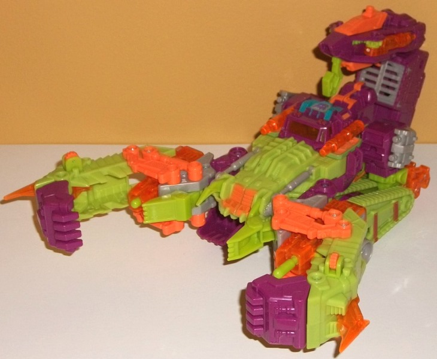
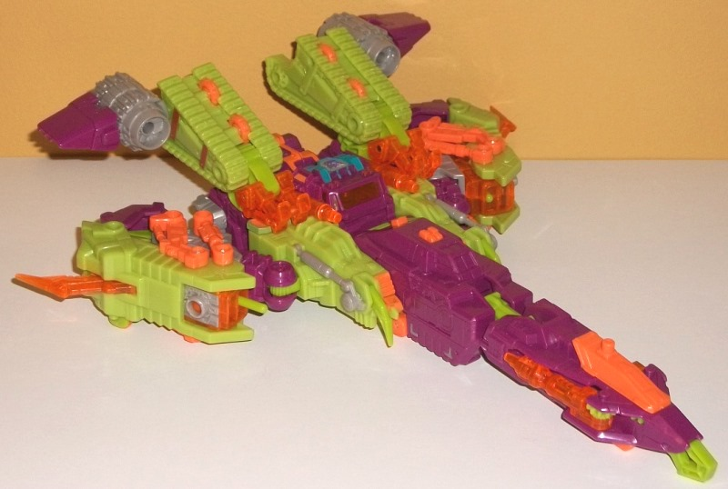
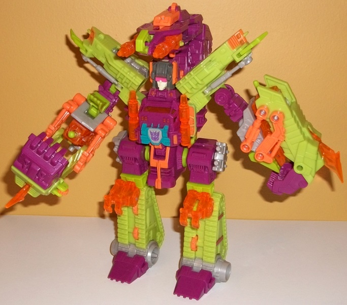
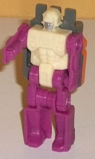

Allegiance
: Star Seeker/Decepticon
Size
: Ultra (comes in a 5-pack with
Cannonball
,
Devcon
,
Ferak
,
and
Ginrai
)
Difficulty of Transformation
: Medium
Color Scheme
: Light pale green,
moderately dark violet, bright orange, transparent light orange, and some
light milky purplish gray, creamy off-white, silver, light pale red, dull
green, and moderately dark flat blue
Rating
: 9.4
(NOTE: Because this is a repaint, this is not a full-blown review. This mainly covers any changes made to the mold and the color scheme, and merely compares it to Energon Scorponok. For a review on the mold itself, read the review of Energon Scorponok here .)


Boy, I'm surprised FunPub
would use such a large mold again, after
Double
Punch
. The color scheme for Scorponok this time has been tweaked by
more pure "late '80s" goodness- i.e., brighter and more accurate to the
original G1 toy. The main colors of light pale green and violet-- a moderately
dark shade of the latter-- go together quite well, being a "Decepticon-y"
color scheme and also oddly fitting for a construction vehicle, as the
Constructicons have made clear. The pale-ness of the green helps offset
the BRIGHT safety orange that is used on places like the robot waist, the
hinges around the claws, and the jet mode cockpit. Thankfully, the transparent
version of orange--used for all the transparent plastic on this toy--is
still a light shade, but not as obnoxiously bright, which allows Scorponok
to have a good amount of orange without things getting too eye-watering.
There's also a fair bit of purplish-tinted light milky gray, used on a
few places like the hip guns, the pistons on the soulders, parts of the
lower claws, the middle of the toes, and a few other minor parts. Normally
I'm not a fan of gray, but Scorponok's color scheme is so darned... well...
colorful that a neutral color works well for everything else to bounce
off of. The purplish tint also helps the gray fit in a bit with the violet,
which also goes a long ways towards me liking the color. For a BotCon toy,
Scorponok has surprisingly few paint apps-- there's a really nice shade
of blue used around the Decepticon symbol molded onto his chest, along
with some bright orange paint on the waist and the "scorpion" face, duller
orange paint on stripes on the legs, and a bit of silver on the chest.
There's also a titch of green paint on the orange parts flanking the chest--
oddly dull and noticeably darker than the green plastic. Otherwise, Scorponok
is bereft of paint. Thankfully his mix of four major plastic colors (five
if you count the solid and transparent orange as separate) helps to mitigate
this in most respects, but still, some paint on the treads or on the claws
really would've been appreciated. Also it is worth noting that, like with
most large BotCon exclusives, the electronics for Scorponok have been gutted
for this release.


Of course, the big news
about this toy was the most extensive remolding made to a BotCon figure
up to that point; the toy has been retooled into a genuine Headmaster!
This is quite impressive for FunPub. For the "base", the mold for Japanese
Encore Spike Witwicky was used, but the face on the back of the Headmaster
figure-- i.e., the face-- was replaced with a very G1-y Scorponok headsculpt.
The identity of the Headmaster guy himself is apparently Olin Zarak, a
relative of the original Lord Zarak, who was the original G1 Scorponok
toy's Headmaster. The toy has the sculpt typical of a G1 Headmaster toy,
being rather stiff and "old-school" in its look with a rather "exosuit"
"look" to the Headmaster robot mode, with many square robotic details but
things like curved abs and very human-proportioned arms sculpted into the
toy. The purple of the appendages goes very well with the creamy off-white
of the main body, and the face has a bit of silver on it. It should be
noted that Olin can't QUITE fit in Scorponok's cockpit, but it's not like
these two molds were made for each other, being separated by more than
15 years of time. For articulation in Headmaster mode, Olin can move back-and-forth
at the shoulders, hips, and knees (the latter two at one point each, since
the legs are connected together at said knees). It should also be mentioned
that there's a small forehead panel on Scorponok's headsculpt that was
used on the original version of this mold to cover up the face in Headmaster
robot mode, but the new sculpt doesn't leave room for this panel to flip
down, so Scorponok's face is quite visible on the back side of Olin-- which
I don't mind, really, it would only make the fact that he's a head slightly
less obvious. The neck of the Energon Scorponok figure has been remolded
to fit in this figure in head mode quite snugly. As with most Headmasters
the resulting head mode has some obvious "junk" behind the face and the
face itself is a bit 2-D. The actual sculpted details are also a bit angular
and not very expressive, though in FunPub's defense that fits right in
on a G1 Headmaster. Although a really cool remolding job was done overall,
the remolding means that Scorponok's head sits on a neck that looks a bit
higher than it should be, and the head's ability to rotate has been taken
away. (The neck piece also has to be folded away to transform Scorponok
into either of his alt modes, just like the head did on the original version
of this mold.)
It's very impressive
that FunPub was able to remold a toy in such a fashion as to make a fully
functioning Headmaster out of a toy that was never meant to be one and
an old '80s Headmaster mold for a completely different toy. The colors
are also decent, if a bit wacky in that late '80s/early '90s fashion. However,
though this toy is the most sought-after of the BotCon 2014 exclusives,
its appeal is limited to me because, well... it's a remold of Scorponok
as Scorponok. Different versions of the character, granted, but still,
I would've liked this extensive molding done to some other mold to make
it into a completely different character instead, honestly.
Review by Beastbot